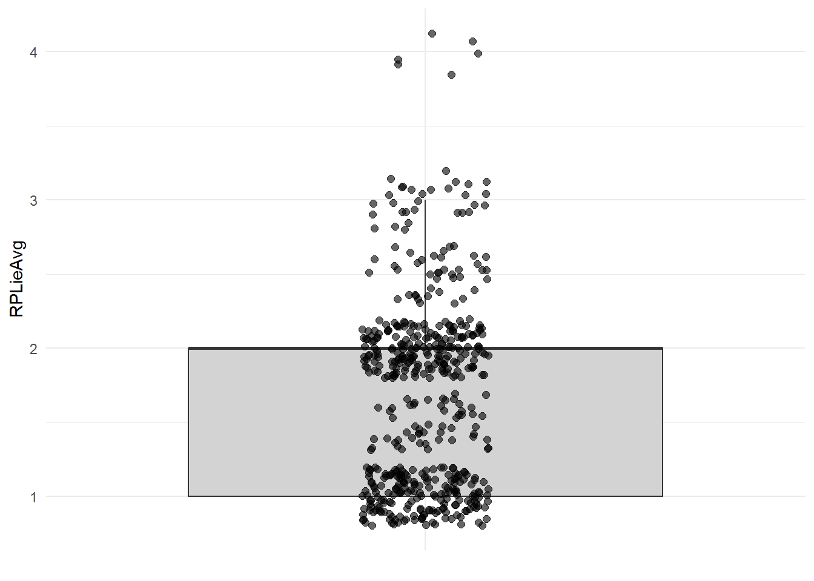
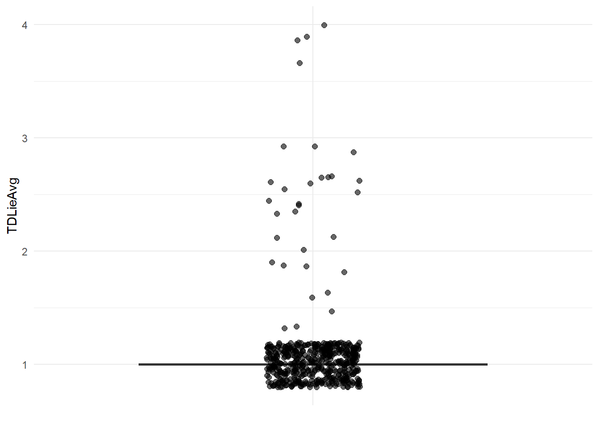
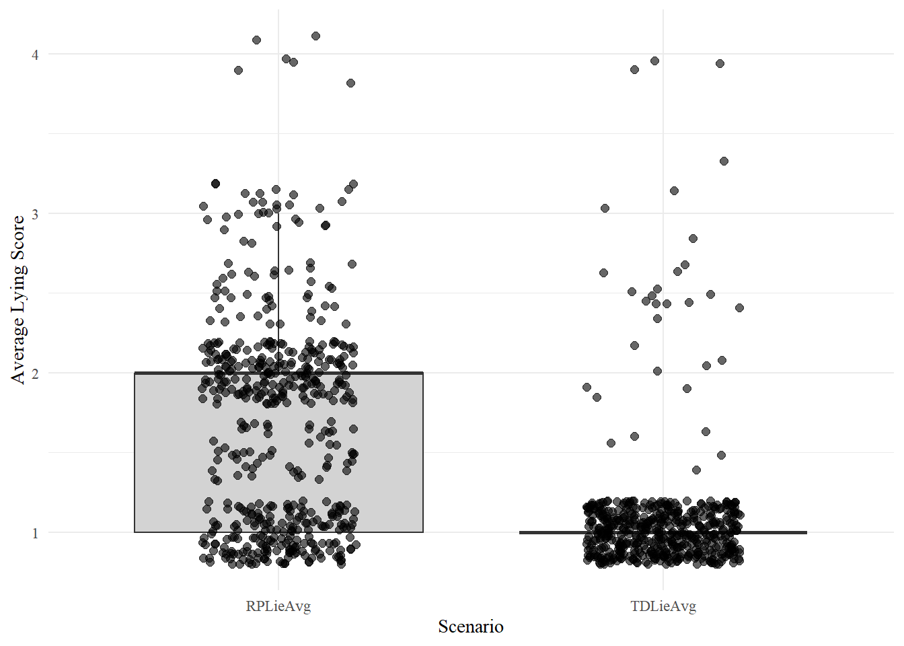

The goal of this project is to load my SPSS data into R and create a box and whiskers plot representing lying within each scenario.
##Step 1: Reading in SPSS Data
library(haven)
library(tidyr)
library(tidyverse)## ── Attaching core tidyverse packages ──────────────────────── tidyverse 2.0.0 ──
## ✔ dplyr 1.1.4 ✔ purrr 1.0.4
## ✔ forcats 1.0.0 ✔ readr 2.1.5
## ✔ ggplot2 3.5.1 ✔ stringr 1.5.1
## ✔ lubridate 1.9.4 ✔ tibble 3.2.1
## ── Conflicts ────────────────────────────────────────── tidyverse_conflicts() ──
## ✖ dplyr::filter() masks stats::filter()
## ✖ dplyr::lag() masks stats::lag()
## ℹ Use the conflicted package (<http://conflicted.r-lib.org/>) to force all conflicts to become errorsThesis <- read_spss("C:/Users/crawl/OneDrive/Documents/GitHub/Portfolio/ThesisAllDataNew.sav")##Step 2: Creating Plots per scenario > Goal here is to have a box and wiskers plot for each scenario (Romantic Partner-RP and Twenty Dollars-TD) with the dots visible for each data point.
ggplot(Thesis, aes(x = "", y = RPLieAvg)) +
geom_boxplot(outlier.shape = NA, fill = "lightgray")+
geom_jitter(width = 0.1, size = 2, alpha = 0.6, color = "Black") +
labs(x = NULL, y = "RPLieAvg") +
theme_minimal()
ggplot(Thesis, aes(x = "", y = TDLieAvg)) +
geom_boxplot(outlier.shape = NA, fill = "lightgray")+
geom_jitter(width = 0.1, size = 2, alpha = 0.6, color = "Black") +
labs(x = NULL, y = "TDLieAvg") +
theme_minimal()
library(tidyr)
library(dplyr)
Thesis_long <- Thesis %>%
pivot_longer(cols = c(RPLieAvg, TDLieAvg),
names_to = "Scenario",
values_to = "LieAvg")library(extrafont)## Registering fonts with R# Run once to import system fonts (takes a bit)
font_import(prompt = FALSE)## Scanning ttf files in C:\Windows/Fonts ...## Extracting .afm files from .ttf files...## C:\Windows\Fonts\AGENCYB.TTF : AgencyFB-Bold already registered in fonts database. Skipping.
## C:\Windows\Fonts\AGENCYR.TTF : AgencyFB-Reg already registered in fonts database. Skipping.
## C:\Windows\Fonts\ALGER.TTF : Algerian already registered in fonts database. Skipping.
## C:\Windows\Fonts\ANTQUAB.TTF : BookAntiqua-Bold already registered in fonts database. Skipping.
## C:\Windows\Fonts\ANTQUABI.TTF : BookAntiqua-BoldItalic already registered in fonts database. Skipping.
## C:\Windows\Fonts\ANTQUAI.TTF : BookAntiqua-Italic already registered in fonts database. Skipping.
## C:\Windows\Fonts\arial.ttf : ArialMT already registered in fonts database. Skipping.
## C:\Windows\Fonts\arialbd.ttf : Arial-BoldMT already registered in fonts database. Skipping.
## C:\Windows\Fonts\arialbi.ttf : Arial-BoldItalicMT already registered in fonts database. Skipping.
## C:\Windows\Fonts\ariali.ttf : Arial-ItalicMT already registered in fonts database. Skipping.
## C:\Windows\Fonts\ARIALN.TTF : ArialNarrow already registered in fonts database. Skipping.
## C:\Windows\Fonts\ARIALNB.TTF : ArialNarrow-Bold already registered in fonts database. Skipping.
## C:\Windows\Fonts\ARIALNBI.TTF : ArialNarrow-BoldItalic already registered in fonts database. Skipping.
## C:\Windows\Fonts\ARIALNI.TTF : ArialNarrow-Italic already registered in fonts database. Skipping.
## C:\Windows\Fonts\ariblk.ttf : Arial-Black already registered in fonts database. Skipping.
## C:\Windows\Fonts\ARLRDBD.TTF : ArialRoundedMTBold already registered in fonts database. Skipping.
## C:\Windows\Fonts\bahnschrift.ttf : Bahnschrift already registered in fonts database. Skipping.
## C:\Windows\Fonts\BASKVILL.TTF : BaskOldFace already registered in fonts database. Skipping.
## C:\Windows\Fonts\BAUHS93.TTF : Bauhaus93 already registered in fonts database. Skipping.
## C:\Windows\Fonts\BELL.TTF : BellMT already registered in fonts database. Skipping.
## C:\Windows\Fonts\BELLB.TTF : BellMTBold already registered in fonts database. Skipping.
## C:\Windows\Fonts\BELLI.TTF : BellMTItalic already registered in fonts database. Skipping.
## C:\Windows\Fonts\BERNHC.TTF : BernardMT-Condensed already registered in fonts database. Skipping.
## C:\Windows\Fonts\BKANT.TTF : BookAntiqua already registered in fonts database. Skipping.
## C:\Windows\Fonts\BOD_B.TTF : BodoniMT-Bold already registered in fonts database. Skipping.
## C:\Windows\Fonts\BOD_BI.TTF : BodoniMT-BoldItalic already registered in fonts database. Skipping.
## C:\Windows\Fonts\BOD_BLAI.TTF : BodoniMTBlack-Italic already registered in fonts database. Skipping.
## C:\Windows\Fonts\BOD_BLAR.TTF : BodoniMTBlack already registered in fonts database. Skipping.
## C:\Windows\Fonts\BOD_CB.TTF : BodoniMTCondensed-Bold already registered in fonts database. Skipping.
## C:\Windows\Fonts\BOD_CBI.TTF : BodoniMTCondensed-BoldItalic already registered in fonts database. Skipping.
## C:\Windows\Fonts\BOD_CI.TTF : BodoniMTCondensed-Italic already registered in fonts database. Skipping.
## C:\Windows\Fonts\BOD_CR.TTF : BodoniMTCondensed already registered in fonts database. Skipping.
## C:\Windows\Fonts\BOD_I.TTF : BodoniMT-Italic already registered in fonts database. Skipping.
## C:\Windows\Fonts\BOD_PSTC.TTF : BodoniMTPosterCompressed already registered in fonts database. Skipping.
## C:\Windows\Fonts\BOD_R.TTF : BodoniMT already registered in fonts database. Skipping.
## C:\Windows\Fonts\BOOKOS.TTF : BookmanOldStyle already registered in fonts database. Skipping.
## C:\Windows\Fonts\BOOKOSB.TTF : BookmanOldStyle-Bold already registered in fonts database. Skipping.
## C:\Windows\Fonts\BOOKOSBI.TTF : BookmanOldStyle-BoldItalic already registered in fonts database. Skipping.
## C:\Windows\Fonts\BOOKOSI.TTF : BookmanOldStyle-Italic already registered in fonts database. Skipping.
## C:\Windows\Fonts\BRADHITC.TTF : BradleyHandITC already registered in fonts database. Skipping.
## C:\Windows\Fonts\BRITANIC.TTF : BritannicBold already registered in fonts database. Skipping.
## C:\Windows\Fonts\BRLNSB.TTF : BerlinSansFB-Bold already registered in fonts database. Skipping.
## C:\Windows\Fonts\BRLNSDB.TTF : BerlinSansFBDemi-Bold already registered in fonts database. Skipping.
## C:\Windows\Fonts\BRLNSR.TTF : BerlinSansFB-Reg already registered in fonts database. Skipping.
## C:\Windows\Fonts\BROADW.TTF : Broadway already registered in fonts database. Skipping.
## C:\Windows\Fonts\BRUSHSCI.TTF : BrushScriptMT already registered in fonts database. Skipping.
## C:\Windows\Fonts\BSSYM7.TTF : BookshelfSymbolSeven already registered in fonts database. Skipping.
## C:\Windows\Fonts\calibri.ttf : Calibri already registered in fonts database. Skipping.
## C:\Windows\Fonts\calibrib.ttf : Calibri-Bold already registered in fonts database. Skipping.
## C:\Windows\Fonts\calibrii.ttf : Calibri-Italic already registered in fonts database. Skipping.
## C:\Windows\Fonts\calibril.ttf : Calibri-Light already registered in fonts database. Skipping.
## C:\Windows\Fonts\calibrili.ttf : Calibri-LightItalic already registered in fonts database. Skipping.
## C:\Windows\Fonts\calibriz.ttf : Calibri-BoldItalic already registered in fonts database. Skipping.
## C:\Windows\Fonts\CALIFB.TTF : CalifornianFB-Bold already registered in fonts database. Skipping.
## C:\Windows\Fonts\CALIFI.TTF : CalifornianFB-Italic already registered in fonts database. Skipping.
## C:\Windows\Fonts\CALIFR.TTF : CalifornianFB-Reg already registered in fonts database. Skipping.
## C:\Windows\Fonts\CALIST.TTF : CalistoMT already registered in fonts database. Skipping.
## C:\Windows\Fonts\CALISTB.TTF : CalisMTBol already registered in fonts database. Skipping.
## C:\Windows\Fonts\CALISTBI.TTF : CalistoMT-BoldItalic already registered in fonts database. Skipping.
## C:\Windows\Fonts\CALISTI.TTF : CalistoMT-Italic already registered in fonts database. Skipping.
## C:\Windows\Fonts\cambriab.ttf : Cambria-Bold already registered in fonts database. Skipping.
## C:\Windows\Fonts\cambriai.ttf : Cambria-Italic already registered in fonts database. Skipping.
## C:\Windows\Fonts\cambriaz.ttf : Cambria-BoldItalic already registered in fonts database. Skipping.
## C:\Windows\Fonts\Candara.ttf : Candara already registered in fonts database. Skipping.
## C:\Windows\Fonts\Candarab.ttf : Candara-Bold already registered in fonts database. Skipping.
## C:\Windows\Fonts\Candarai.ttf : Candara-Italic already registered in fonts database. Skipping.
## C:\Windows\Fonts\Candaral.ttf : Candara-Light already registered in fonts database. Skipping.
## C:\Windows\Fonts\Candarali.ttf : Candara-LightItalic already registered in fonts database. Skipping.
## C:\Windows\Fonts\Candaraz.ttf : Candara-BoldItalic already registered in fonts database. Skipping.
## C:\Windows\Fonts\CASTELAR.TTF : Castellar already registered in fonts database. Skipping.
## C:\Windows\Fonts\CENSCBK.TTF : CenturySchoolbook already registered in fonts database. Skipping.
## C:\Windows\Fonts\CENTAUR.TTF : Centaur already registered in fonts database. Skipping.
## C:\Windows\Fonts\CENTURY.TTF : Century already registered in fonts database. Skipping.
## C:\Windows\Fonts\CHILLER.TTF : Chiller-Regular already registered in fonts database. Skipping.
## C:\Windows\Fonts\COLONNA.TTF : ColonnaMT already registered in fonts database. Skipping.
## C:\Windows\Fonts\comic.ttf : ComicSansMS already registered in fonts database. Skipping.
## C:\Windows\Fonts\comicbd.ttf : ComicSansMS-Bold already registered in fonts database. Skipping.
## C:\Windows\Fonts\comici.ttf : ComicSansMS-Italic already registered in fonts database. Skipping.
## C:\Windows\Fonts\comicz.ttf : ComicSansMS-BoldItalic already registered in fonts database. Skipping.
## C:\Windows\Fonts\consola.ttf : Consolas already registered in fonts database. Skipping.
## C:\Windows\Fonts\consolab.ttf : Consolas-Bold already registered in fonts database. Skipping.
## C:\Windows\Fonts\consolai.ttf : Consolas-Italic already registered in fonts database. Skipping.
## C:\Windows\Fonts\consolaz.ttf : Consolas-BoldItalic already registered in fonts database. Skipping.
## C:\Windows\Fonts\constan.ttf : Constantia already registered in fonts database. Skipping.
## C:\Windows\Fonts\constanb.ttf : Constantia-Bold already registered in fonts database. Skipping.
## C:\Windows\Fonts\constani.ttf : Constantia-Italic already registered in fonts database. Skipping.
## C:\Windows\Fonts\constanz.ttf : Constantia-BoldItalic already registered in fonts database. Skipping.
## C:\Windows\Fonts\COOPBL.TTF : CooperBlack already registered in fonts database. Skipping.
## C:\Windows\Fonts\COPRGTB.TTF : CopperplateGothic-Bold already registered in fonts database. Skipping.
## C:\Windows\Fonts\COPRGTL.TTF : CopperplateGothic-Light already registered in fonts database. Skipping.
## C:\Windows\Fonts\corbel.ttf : Corbel already registered in fonts database. Skipping.
## C:\Windows\Fonts\corbelb.ttf : Corbel-Bold already registered in fonts database. Skipping.
## C:\Windows\Fonts\corbeli.ttf : Corbel-Italic already registered in fonts database. Skipping.
## C:\Windows\Fonts\corbell.ttf : CorbelLight already registered in fonts database. Skipping.
## C:\Windows\Fonts\corbelli.ttf : CorbelLight-Italic already registered in fonts database. Skipping.
## C:\Windows\Fonts\corbelz.ttf : Corbel-BoldItalic already registered in fonts database. Skipping.
## C:\Windows\Fonts\cour.ttf : CourierNewPSMT already registered in fonts database. Skipping.
## C:\Windows\Fonts\courbd.ttf : CourierNewPS-BoldMT already registered in fonts database. Skipping.
## C:\Windows\Fonts\courbi.ttf : CourierNewPS-BoldItalicMT already registered in fonts database. Skipping.
## C:\Windows\Fonts\couri.ttf : CourierNewPS-ItalicMT already registered in fonts database. Skipping.
## C:\Windows\Fonts\CURLZ___.TTF : CurlzMT already registered in fonts database. Skipping.
## C:\Windows\Fonts\DUBAI-BOLD.TTF : Dubai-Bold already registered in fonts database. Skipping.
## C:\Windows\Fonts\DUBAI-LIGHT.TTF : Dubai-Light already registered in fonts database. Skipping.
## C:\Windows\Fonts\DUBAI-MEDIUM.TTF : Dubai-Medium already registered in fonts database. Skipping.
## C:\Windows\Fonts\DUBAI-REGULAR.TTF : Dubai-Regular already registered in fonts database. Skipping.
## C:\Windows\Fonts\ebrima.ttf : Ebrima already registered in fonts database. Skipping.
## C:\Windows\Fonts\ebrimabd.ttf : Ebrima-Bold already registered in fonts database. Skipping.
## C:\Windows\Fonts\ELEPHNT.TTF : Elephant-Regular already registered in fonts database. Skipping.
## C:\Windows\Fonts\ELEPHNTI.TTF : Elephant-Italic already registered in fonts database. Skipping.
## C:\Windows\Fonts\ENGR.TTF : EngraversMT already registered in fonts database. Skipping.
## C:\Windows\Fonts\ERASBD.TTF : ErasITC-Bold already registered in fonts database. Skipping.
## C:\Windows\Fonts\ERASDEMI.TTF : ErasITC-Demi already registered in fonts database. Skipping.
## C:\Windows\Fonts\ERASLGHT.TTF : ErasITC-Light already registered in fonts database. Skipping.
## C:\Windows\Fonts\ERASMD.TTF : ErasITC-Medium already registered in fonts database. Skipping.
## C:\Windows\Fonts\FELIXTI.TTF : FelixTitlingMT already registered in fonts database. Skipping.
## C:\Windows\Fonts\FORTE.TTF : ForteMT already registered in fonts database. Skipping.
## C:\Windows\Fonts\FRABK.TTF : FranklinGothic-Book already registered in fonts database. Skipping.
## C:\Windows\Fonts\FRABKIT.TTF : FranklinGothic-BookItalic already registered in fonts database. Skipping.
## C:\Windows\Fonts\FRADM.TTF : FranklinGothic-Demi already registered in fonts database. Skipping.
## C:\Windows\Fonts\FRADMCN.TTF : FranklinGothic-DemiCond already registered in fonts database. Skipping.
## C:\Windows\Fonts\FRADMIT.TTF : FranklinGothic-DemiItalic already registered in fonts database. Skipping.
## C:\Windows\Fonts\FRAHV.TTF : FranklinGothic-Heavy already registered in fonts database. Skipping.
## C:\Windows\Fonts\FRAHVIT.TTF : FranklinGothic-HeavyItalic already registered in fonts database. Skipping.
## C:\Windows\Fonts\framd.ttf : FranklinGothic-Medium already registered in fonts database. Skipping.
## C:\Windows\Fonts\FRAMDCN.TTF : FranklinGothic-MediumCond already registered in fonts database. Skipping.
## C:\Windows\Fonts\framdit.ttf : FranklinGothic-MediumItalic already registered in fonts database. Skipping.
## C:\Windows\Fonts\FREESCPT.TTF : FreestyleScript-Regular already registered in fonts database. Skipping.
## C:\Windows\Fonts\FRSCRIPT.TTF : FrenchScriptMT already registered in fonts database. Skipping.
## C:\Windows\Fonts\FTLTLT.TTF : FootlightMTLight already registered in fonts database. Skipping.
## C:\Windows\Fonts\Gabriola.ttf : Gabriola already registered in fonts database. Skipping.
## C:\Windows\Fonts\gadugi.ttf : Gadugi already registered in fonts database. Skipping.
## C:\Windows\Fonts\gadugib.ttf : Gadugi-Bold already registered in fonts database. Skipping.
## C:\Windows\Fonts\GARA.TTF : Garamond already registered in fonts database. Skipping.
## C:\Windows\Fonts\GARABD.TTF : Garamond-Bold already registered in fonts database. Skipping.
## C:\Windows\Fonts\GARAIT.TTF : Garamond-Italic already registered in fonts database. Skipping.
## C:\Windows\Fonts\georgia.ttf : Georgia already registered in fonts database. Skipping.
## C:\Windows\Fonts\georgiab.ttf : Georgia-Bold already registered in fonts database. Skipping.
## C:\Windows\Fonts\georgiai.ttf : Georgia-Italic already registered in fonts database. Skipping.
## C:\Windows\Fonts\georgiaz.ttf : Georgia-BoldItalic already registered in fonts database. Skipping.
## C:\Windows\Fonts\GIGI.TTF : Gigi-Regular already registered in fonts database. Skipping.
## C:\Windows\Fonts\GIL_____.TTF : GillSansMT already registered in fonts database. Skipping.
## C:\Windows\Fonts\GILB____.TTF : GillSansMT-Bold already registered in fonts database. Skipping.
## C:\Windows\Fonts\GILBI___.TTF : GillSansMT-BoldItalic already registered in fonts database. Skipping.
## C:\Windows\Fonts\GILC____.TTF : GillSansMT-Condensed already registered in fonts database. Skipping.
## C:\Windows\Fonts\GILI____.TTF : GillSansMT-Italic already registered in fonts database. Skipping.
## C:\Windows\Fonts\GILLUBCD.TTF : GillSans-UltraBoldCondensed already registered in fonts database. Skipping.
## C:\Windows\Fonts\GILSANUB.TTF : GillSans-UltraBold already registered in fonts database. Skipping.
## C:\Windows\Fonts\GLECB.TTF : GloucesterMT-ExtraCondensed already registered in fonts database. Skipping.
## C:\Windows\Fonts\GLSNECB.TTF : GillSansMT-ExtraCondensedBold already registered in fonts database. Skipping.
## C:\Windows\Fonts\GOTHIC.TTF : CenturyGothic already registered in fonts database. Skipping.
## C:\Windows\Fonts\GOTHICB.TTF : CenturyGothic-Bold already registered in fonts database. Skipping.
## C:\Windows\Fonts\GOTHICBI.TTF : CenturyGothic-BoldItalic already registered in fonts database. Skipping.
## C:\Windows\Fonts\GOTHICI.TTF : CenturyGothic-Italic already registered in fonts database. Skipping.
## C:\Windows\Fonts\GOUDOS.TTF : GoudyOldStyleT-Regular already registered in fonts database. Skipping.
## C:\Windows\Fonts\GOUDOSB.TTF : GoudyOldStyleT-Bold already registered in fonts database. Skipping.
## C:\Windows\Fonts\GOUDOSI.TTF : GoudyOldStyleT-Italic already registered in fonts database. Skipping.
## C:\Windows\Fonts\GOUDYSTO.TTF : GoudyStout already registered in fonts database. Skipping.
## C:\Windows\Fonts\HARLOWSI.TTF : HarlowSolid already registered in fonts database. Skipping.
## C:\Windows\Fonts\HARNGTON.TTF : Harrington already registered in fonts database. Skipping.
## C:\Windows\Fonts\HATTEN.TTF : Haettenschweiler already registered in fonts database. Skipping.
## C:\Windows\Fonts\himalaya.ttf : Microsoft-Himalaya already registered in fonts database. Skipping.
## C:\Windows\Fonts\HTOWERT.TTF : HighTowerText-Reg already registered in fonts database. Skipping.
## C:\Windows\Fonts\HTOWERTI.TTF : HighTowerText-Italic already registered in fonts database. Skipping.
## C:\Windows\Fonts\impact.ttf : Impact already registered in fonts database. Skipping.
## C:\Windows\Fonts\IMPRISHA.TTF : ImprintMT-Shadow already registered in fonts database. Skipping.
## C:\Windows\Fonts\INFROMAN.TTF : InformalRoman-Regular already registered in fonts database. Skipping.
## C:\Windows\Fonts\Inkfree.ttf : InkFree already registered in fonts database. Skipping.
## C:\Windows\Fonts\ITCBLKAD.TTF : BlackadderITC-Regular already registered in fonts database. Skipping.
## C:\Windows\Fonts\ITCEDSCR.TTF : EdwardianScriptITC already registered in fonts database. Skipping.
## C:\Windows\Fonts\ITCKRIST.TTF : KristenITC-Regular already registered in fonts database. Skipping.
## C:\Windows\Fonts\javatext.ttf : JavaneseText already registered in fonts database. Skipping.
## C:\Windows\Fonts\JOKERMAN.TTF : Jokerman-Regular already registered in fonts database. Skipping.
## C:\Windows\Fonts\JUICE___.TTF : JuiceITC-Regular already registered in fonts database. Skipping.
## C:\Windows\Fonts\KUNSTLER.TTF : KunstlerScript already registered in fonts database. Skipping.
## C:\Windows\Fonts\l_10646.ttf : LucidaSansUnicode already registered in fonts database. Skipping.
## C:\Windows\Fonts\LATINWD.TTF : LatinWide already registered in fonts database. Skipping.
## C:\Windows\Fonts\LBRITE.TTF : LucidaBright already registered in fonts database. Skipping.
## C:\Windows\Fonts\LBRITED.TTF : LucidaBright-Demi already registered in fonts database. Skipping.
## C:\Windows\Fonts\LBRITEDI.TTF : LucidaBright-DemiItalic already registered in fonts database. Skipping.
## C:\Windows\Fonts\LBRITEI.TTF : LucidaBright-Italic already registered in fonts database. Skipping.
## C:\Windows\Fonts\LCALLIG.TTF : LucidaCalligraphy-Italic already registered in fonts database. Skipping.
## C:\Windows\Fonts\LeelaUIb.ttf : LeelawadeeUI-Bold already registered in fonts database. Skipping.
## C:\Windows\Fonts\LEELAWAD.TTF : Leelawadee already registered in fonts database. Skipping.
## C:\Windows\Fonts\LEELAWDB.TTF : Leelawadee-Bold already registered in fonts database. Skipping.
## C:\Windows\Fonts\LeelawUI.ttf : LeelawadeeUI already registered in fonts database. Skipping.
## C:\Windows\Fonts\LeelUIsl.ttf : LeelawadeeUI-Semilight already registered in fonts database. Skipping.
## C:\Windows\Fonts\LFAX.TTF : LucidaFax already registered in fonts database. Skipping.
## C:\Windows\Fonts\LFAXD.TTF : LucidaFax-Demi already registered in fonts database. Skipping.
## C:\Windows\Fonts\LFAXDI.TTF : LucidaFax-DemiItalic already registered in fonts database. Skipping.
## C:\Windows\Fonts\LFAXI.TTF : LucidaFax-Italic already registered in fonts database. Skipping.
## C:\Windows\Fonts\LHANDW.TTF : LucidaHandwriting-Italic already registered in fonts database. Skipping.
## C:\Windows\Fonts\LSANS.TTF : LucidaSans already registered in fonts database. Skipping.
## C:\Windows\Fonts\LSANSD.TTF : LucidaSans-Demi already registered in fonts database. Skipping.
## C:\Windows\Fonts\LSANSDI.TTF : LucidaSans-DemiItalic already registered in fonts database. Skipping.
## C:\Windows\Fonts\LSANSI.TTF : LucidaSans-Italic already registered in fonts database. Skipping.
## C:\Windows\Fonts\LTYPE.TTF : LucidaSans-Typewriter already registered in fonts database. Skipping.
## C:\Windows\Fonts\LTYPEB.TTF : LucidaSans-TypewriterBold already registered in fonts database. Skipping.
## C:\Windows\Fonts\LTYPEBO.TTF : LucidaSans-TypewriterBoldOblique already registered in fonts database. Skipping.
## C:\Windows\Fonts\LTYPEO.TTF : LucidaSans-TypewriterOblique already registered in fonts database. Skipping.
## C:\Windows\Fonts\lucon.ttf : LucidaConsole already registered in fonts database. Skipping.
## C:\Windows\Fonts\MAGNETOB.TTF : Magneto-Bold already registered in fonts database. Skipping.
## C:\Windows\Fonts\MAIAN.TTF : MaiandraGD-Regular already registered in fonts database. Skipping.
## C:\Windows\Fonts\malgun.ttf : MalgunGothic already registered in fonts database. Skipping.
## C:\Windows\Fonts\malgunbd.ttf : MalgunGothicBold already registered in fonts database. Skipping.
## C:\Windows\Fonts\malgunsl.ttf : MalgunGothic-Semilight already registered in fonts database. Skipping.
## C:\Windows\Fonts\marlett.ttf : Marlett already registered in fonts database. Skipping.
## C:\Windows\Fonts\MATURASC.TTF : MaturaMTScriptCapitals already registered in fonts database. Skipping.
## C:\Windows\Fonts\micross.ttf : MicrosoftSansSerif already registered in fonts database. Skipping.
## C:\Windows\Fonts\MISTRAL.TTF : Mistral already registered in fonts database. Skipping.
## C:\Windows\Fonts\mmrtext.ttf : MyanmarText already registered in fonts database. Skipping.
## C:\Windows\Fonts\mmrtextb.ttf : MyanmarText-Bold already registered in fonts database. Skipping.
## C:\Windows\Fonts\MOD20.TTF : Modern-Regular already registered in fonts database. Skipping.
## C:\Windows\Fonts\monbaiti.ttf : MongolianBaiti already registered in fonts database. Skipping.
## C:\Windows\Fonts\MSUIGHUB.TTF : MicrosoftUighur-Bold already registered in fonts database. Skipping.
## C:\Windows\Fonts\MSUIGHUR.TTF : MicrosoftUighur already registered in fonts database. Skipping.
## C:\Windows\Fonts\msyi.ttf : Microsoft-Yi-Baiti already registered in fonts database. Skipping.
## C:\Windows\Fonts\MTCORSVA.TTF : MonotypeCorsiva already registered in fonts database. Skipping.
## C:\Windows\Fonts\MTEXTRA.TTF : MT-Extra already registered in fonts database. Skipping.
## C:\Windows\Fonts\mvboli.ttf : MVBoli already registered in fonts database. Skipping.
## C:\Windows\Fonts\NIAGENG.TTF : NiagaraEngraved-Reg already registered in fonts database. Skipping.
## C:\Windows\Fonts\NIAGSOL.TTF : NiagaraSolid-Reg already registered in fonts database. Skipping.
## C:\Windows\Fonts\ntailu.ttf : MicrosoftNewTaiLue already registered in fonts database. Skipping.
## C:\Windows\Fonts\ntailub.ttf : MicrosoftNewTaiLue-Bold already registered in fonts database. Skipping.
## C:\Windows\Fonts\OCRAEXT.TTF : OCRAExtended already registered in fonts database. Skipping.
## C:\Windows\Fonts\OLDENGL.TTF : OldEnglishTextMT already registered in fonts database. Skipping.
## C:\Windows\Fonts\ONYX.TTF : Onyx already registered in fonts database. Skipping.
## C:\Windows\Fonts\OUTLOOK.TTF : MSOutlook already registered in fonts database. Skipping.
## C:\Windows\Fonts\pala.ttf : PalatinoLinotype-Roman already registered in fonts database. Skipping.
## C:\Windows\Fonts\palab.ttf : PalatinoLinotype-Bold already registered in fonts database. Skipping.
## C:\Windows\Fonts\palabi.ttf : PalatinoLinotype-BoldItalic already registered in fonts database. Skipping.
## C:\Windows\Fonts\palai.ttf : PalatinoLinotype-Italic already registered in fonts database. Skipping.
## C:\Windows\Fonts\PALSCRI.TTF : PalaceScriptMT already registered in fonts database. Skipping.
## C:\Windows\Fonts\PAPYRUS.TTF : Papyrus-Regular already registered in fonts database. Skipping.
## C:\Windows\Fonts\PARCHM.TTF : Parchment-Regular already registered in fonts database. Skipping.
## C:\Windows\Fonts\PER_____.TTF : Perpetua already registered in fonts database. Skipping.
## C:\Windows\Fonts\PERB____.TTF : Perpetua-Bold already registered in fonts database. Skipping.
## C:\Windows\Fonts\PERBI___.TTF : Perpetua-BoldItalic already registered in fonts database. Skipping.
## C:\Windows\Fonts\PERI____.TTF : Perpetua-Italic already registered in fonts database. Skipping.
## C:\Windows\Fonts\PERTIBD.TTF : PerpetuaTitlingMT-Bold already registered in fonts database. Skipping.
## C:\Windows\Fonts\PERTILI.TTF : PerpetuaTitlingMT-Light already registered in fonts database. Skipping.
## C:\Windows\Fonts\phagspa.ttf : MicrosoftPhagsPa already registered in fonts database. Skipping.
## C:\Windows\Fonts\phagspab.ttf : MicrosoftPhagsPa-Bold already registered in fonts database. Skipping.
## C:\Windows\Fonts\PLAYBILL.TTF : Playbill already registered in fonts database. Skipping.
## C:\Windows\Fonts\POORICH.TTF : PoorRichard-Regular already registered in fonts database. Skipping.
## C:\Windows\Fonts\PRISTINA.TTF : Pristina-Regular already registered in fonts database. Skipping.
## C:\Windows\Fonts\RAGE.TTF : RageItalic already registered in fonts database. Skipping.
## C:\Windows\Fonts\RAVIE.TTF : Ravie already registered in fonts database. Skipping.
## C:\Windows\Fonts\REFSAN.TTF : MSReferenceSansSerif already registered in fonts database. Skipping.
## C:\Windows\Fonts\REFSPCL.TTF : MSReferenceSpecialty already registered in fonts database. Skipping.
## C:\Windows\Fonts\ROCC____.TTF : Rockwell-Condensed already registered in fonts database. Skipping.
## C:\Windows\Fonts\ROCCB___.TTF : Rockwell-CondensedBold already registered in fonts database. Skipping.
## C:\Windows\Fonts\ROCK.TTF : Rockwell already registered in fonts database. Skipping.
## C:\Windows\Fonts\ROCKB.TTF : Rockwell-Bold already registered in fonts database. Skipping.
## C:\Windows\Fonts\ROCKBI.TTF : Rockwell-BoldItalic already registered in fonts database. Skipping.
## C:\Windows\Fonts\ROCKEB.TTF : Rockwell-ExtraBold already registered in fonts database. Skipping.
## C:\Windows\Fonts\ROCKI.TTF : Rockwell-Italic already registered in fonts database. Skipping.
## C:\Windows\Fonts\SansSerifCollection.ttf : SansSerifCollection already registered in fonts database. Skipping.
## C:\Windows\Fonts\SCHLBKB.TTF : CenturySchoolbook-Bold already registered in fonts database. Skipping.
## C:\Windows\Fonts\SCHLBKBI.TTF : CenturySchoolbook-BoldItalic already registered in fonts database. Skipping.
## C:\Windows\Fonts\SCHLBKI.TTF : CenturySchoolbook-Italic already registered in fonts database. Skipping.
## C:\Windows\Fonts\SCRIPTBL.TTF : ScriptMTBold already registered in fonts database. Skipping.
## C:\Windows\Fonts\segmdl2.ttf : SegoeMDL2Assets already registered in fonts database. Skipping.
## C:\Windows\Fonts\SegoeIcons.ttf : SegoeFluentIcons already registered in fonts database. Skipping.
## C:\Windows\Fonts\segoepr.ttf : SegoePrint already registered in fonts database. Skipping.
## C:\Windows\Fonts\segoeprb.ttf : SegoePrint-Bold already registered in fonts database. Skipping.
## C:\Windows\Fonts\segoesc.ttf : SegoeScript already registered in fonts database. Skipping.
## C:\Windows\Fonts\segoescb.ttf : SegoeScript-Bold already registered in fonts database. Skipping.
## C:\Windows\Fonts\segoeui.ttf : SegoeUI already registered in fonts database. Skipping.
## C:\Windows\Fonts\segoeuib.ttf : SegoeUI-Bold already registered in fonts database. Skipping.
## C:\Windows\Fonts\segoeuii.ttf : SegoeUI-Italic already registered in fonts database. Skipping.
## C:\Windows\Fonts\segoeuil.ttf : SegoeUI-Light already registered in fonts database. Skipping.
## C:\Windows\Fonts\segoeuisl.ttf : SegoeUI-Semilight already registered in fonts database. Skipping.
## C:\Windows\Fonts\segoeuiz.ttf : SegoeUI-BoldItalic already registered in fonts database. Skipping.
## C:\Windows\Fonts\seguibl.ttf : SegoeUIBlack already registered in fonts database. Skipping.
## C:\Windows\Fonts\seguibli.ttf : SegoeUIBlack-Italic already registered in fonts database. Skipping.
## C:\Windows\Fonts\seguiemj.ttf : SegoeUIEmoji already registered in fonts database. Skipping.
## C:\Windows\Fonts\seguihis.ttf : SegoeUIHistoric already registered in fonts database. Skipping.
## C:\Windows\Fonts\seguili.ttf : SegoeUI-LightItalic already registered in fonts database. Skipping.
## C:\Windows\Fonts\seguisb.ttf : SegoeUI-Semibold already registered in fonts database. Skipping.
## C:\Windows\Fonts\seguisbi.ttf : SegoeUI-SemiboldItalic already registered in fonts database. Skipping.
## C:\Windows\Fonts\seguisli.ttf : SegoeUI-SemilightItalic already registered in fonts database. Skipping.
## C:\Windows\Fonts\seguisym.ttf : SegoeUISymbol already registered in fonts database. Skipping.
## C:\Windows\Fonts\SegUIVar.ttf : SegoeUIVariable already registered in fonts database. Skipping.
## C:\Windows\Fonts\SHOWG.TTF : ShowcardGothic-Reg already registered in fonts database. Skipping.
## C:\Windows\Fonts\simsunb.ttf : SimSun-ExtB already registered in fonts database. Skipping.
## C:\Windows\Fonts\SimsunExtG.ttf : SimSun-ExtG already registered in fonts database. Skipping.
## C:\Windows\Fonts\SitkaVF-Italic.ttf : SitkaTextItalic already registered in fonts database. Skipping.
## C:\Windows\Fonts\SitkaVF.ttf : SitkaText already registered in fonts database. Skipping.
## C:\Windows\Fonts\SNAP____.TTF : SnapITC-Regular already registered in fonts database. Skipping.
## C:\Windows\Fonts\STENCIL.TTF : Stencil already registered in fonts database. Skipping.
## C:\Windows\Fonts\sylfaen.ttf : Sylfaen already registered in fonts database. Skipping.
## C:\Windows\Fonts\symbol.ttf : SymbolMT already registered in fonts database. Skipping.
## C:\Windows\Fonts\tahoma.ttf : Tahoma already registered in fonts database. Skipping.
## C:\Windows\Fonts\tahomabd.ttf : Tahoma-Bold already registered in fonts database. Skipping.
## C:\Windows\Fonts\taile.ttf : MicrosoftTaiLe already registered in fonts database. Skipping.
## C:\Windows\Fonts\taileb.ttf : MicrosoftTaiLe-Bold already registered in fonts database. Skipping.
## C:\Windows\Fonts\TCB_____.TTF : TwCenMT-Bold already registered in fonts database. Skipping.
## C:\Windows\Fonts\TCBI____.TTF : TwCenMT-BoldItalic already registered in fonts database. Skipping.
## C:\Windows\Fonts\TCCB____.TTF : TwCenMT-CondensedBold already registered in fonts database. Skipping.
## C:\Windows\Fonts\TCCEB.TTF : TwCenMT-CondensedExtraBold already registered in fonts database. Skipping.
## C:\Windows\Fonts\TCCM____.TTF : TwCenMT-Condensed already registered in fonts database. Skipping.
## C:\Windows\Fonts\TCM_____.TTF : TwCenMT-Regular already registered in fonts database. Skipping.
## C:\Windows\Fonts\TCMI____.TTF : TwCenMT-Italic already registered in fonts database. Skipping.
## C:\Windows\Fonts\TEMPSITC.TTF : TempusSansITC already registered in fonts database. Skipping.
## C:\Windows\Fonts\times.ttf : TimesNewRomanPSMT already registered in fonts database. Skipping.
## C:\Windows\Fonts\timesbd.ttf : TimesNewRomanPS-BoldMT already registered in fonts database. Skipping.
## C:\Windows\Fonts\timesbi.ttf : TimesNewRomanPS-BoldItalicMT already registered in fonts database. Skipping.
## C:\Windows\Fonts\timesi.ttf : TimesNewRomanPS-ItalicMT already registered in fonts database. Skipping.
## C:\Windows\Fonts\trebuc.ttf : TrebuchetMS already registered in fonts database. Skipping.
## C:\Windows\Fonts\trebucbd.ttf : TrebuchetMS-Bold already registered in fonts database. Skipping.
## C:\Windows\Fonts\trebucbi.ttf : Trebuchet-BoldItalic already registered in fonts database. Skipping.
## C:\Windows\Fonts\trebucit.ttf : TrebuchetMS-Italic already registered in fonts database. Skipping.
## C:\Windows\Fonts\verdana.ttf : Verdana already registered in fonts database. Skipping.
## C:\Windows\Fonts\verdanab.ttf : Verdana-Bold already registered in fonts database. Skipping.
## C:\Windows\Fonts\verdanai.ttf : Verdana-Italic already registered in fonts database. Skipping.
## C:\Windows\Fonts\verdanaz.ttf : Verdana-BoldItalic already registered in fonts database. Skipping.
## C:\Windows\Fonts\VINERITC.TTF : VinerHandITC already registered in fonts database. Skipping.
## C:\Windows\Fonts\VIVALDII.TTF : Vivaldii already registered in fonts database. Skipping.
## C:\Windows\Fonts\VLADIMIR.TTF : VladimirScript already registered in fonts database. Skipping.
## C:\Windows\Fonts\webdings.ttf : Webdings already registered in fonts database. Skipping.
## C:\Windows\Fonts\wingding.ttf : Wingdings-Regular already registered in fonts database. Skipping.
## C:\Windows\Fonts\WINGDNG2.TTF : Wingdings2 already registered in fonts database. Skipping.
## C:\Windows\Fonts\WINGDNG3.TTF : Wingdings3 already registered in fonts database. Skipping.
## Found FontName for 0 fonts.
## Scanning afm files in C:/Users/crawl/AppData/Local/R/win-library/4.4/extrafontdb/metrics# Register fonts
loadfonts(device = "win") # or use `device = "pdf"` or "postscript" depending on output## Agency FB already registered with windowsFonts().
## Algerian already registered with windowsFonts().
## Arial Black already registered with windowsFonts().
## Arial already registered with windowsFonts().
## Arial Narrow already registered with windowsFonts().
## Arial Rounded MT Bold already registered with windowsFonts().
## Bahnschrift already registered with windowsFonts().
## Baskerville Old Face already registered with windowsFonts().
## Bauhaus 93 already registered with windowsFonts().
## Bell MT already registered with windowsFonts().
## Berlin Sans FB already registered with windowsFonts().
## Berlin Sans FB Demi already registered with windowsFonts().
## Bernard MT Condensed already registered with windowsFonts().
## Blackadder ITC already registered with windowsFonts().
## Bodoni MT already registered with windowsFonts().
## Bodoni MT Black already registered with windowsFonts().
## Bodoni MT Condensed already registered with windowsFonts().
## Bodoni MT Poster Compressed already registered with windowsFonts().
## Book Antiqua already registered with windowsFonts().
## Bookman Old Style already registered with windowsFonts().
## Bookshelf Symbol 7 already registered with windowsFonts().
## Bradley Hand ITC already registered with windowsFonts().
## Britannic Bold already registered with windowsFonts().
## Broadway already registered with windowsFonts().
## Brush Script MT already registered with windowsFonts().
## Calibri already registered with windowsFonts().
## Calibri Light already registered with windowsFonts().
## Californian FB already registered with windowsFonts().
## Calisto MT already registered with windowsFonts().
## Cambria already registered with windowsFonts().
## Candara already registered with windowsFonts().
## Candara Light already registered with windowsFonts().
## Castellar already registered with windowsFonts().
## Centaur already registered with windowsFonts().
## Century already registered with windowsFonts().
## Century Gothic already registered with windowsFonts().
## Century Schoolbook already registered with windowsFonts().
## Chiller already registered with windowsFonts().
## Colonna MT already registered with windowsFonts().
## Comic Sans MS already registered with windowsFonts().
## Consolas already registered with windowsFonts().
## Constantia already registered with windowsFonts().
## Cooper Black already registered with windowsFonts().
## Copperplate Gothic Bold already registered with windowsFonts().
## Copperplate Gothic Light already registered with windowsFonts().
## Corbel already registered with windowsFonts().
## Corbel Light already registered with windowsFonts().
## Courier New already registered with windowsFonts().
## Curlz MT already registered with windowsFonts().
## Dubai already registered with windowsFonts().
## Dubai Light already registered with windowsFonts().
## Dubai Medium already registered with windowsFonts().
## Ebrima already registered with windowsFonts().
## Edwardian Script ITC already registered with windowsFonts().
## Elephant already registered with windowsFonts().
## Engravers MT already registered with windowsFonts().
## Eras Bold ITC already registered with windowsFonts().
## Eras Demi ITC already registered with windowsFonts().
## Eras Light ITC already registered with windowsFonts().
## Eras Medium ITC already registered with windowsFonts().
## Felix Titling already registered with windowsFonts().
## Footlight MT Light already registered with windowsFonts().
## Forte already registered with windowsFonts().
## Franklin Gothic Book already registered with windowsFonts().
## Franklin Gothic Demi already registered with windowsFonts().
## Franklin Gothic Demi Cond already registered with windowsFonts().
## Franklin Gothic Heavy already registered with windowsFonts().
## Franklin Gothic Medium already registered with windowsFonts().
## Franklin Gothic Medium Cond already registered with windowsFonts().
## Freestyle Script already registered with windowsFonts().
## French Script MT already registered with windowsFonts().
## Gabriola already registered with windowsFonts().
## Gadugi already registered with windowsFonts().
## Garamond already registered with windowsFonts().
## Georgia already registered with windowsFonts().
## Gigi already registered with windowsFonts().
## Gill Sans Ultra Bold already registered with windowsFonts().
## Gill Sans Ultra Bold Condensed already registered with windowsFonts().
## Gill Sans MT already registered with windowsFonts().
## Gill Sans MT Condensed already registered with windowsFonts().
## Gill Sans MT Ext Condensed Bold already registered with windowsFonts().
## Gloucester MT Extra Condensed already registered with windowsFonts().
## Goudy Old Style already registered with windowsFonts().
## Goudy Stout already registered with windowsFonts().
## Haettenschweiler already registered with windowsFonts().
## Harlow Solid Italic already registered with windowsFonts().
## Harrington already registered with windowsFonts().
## High Tower Text already registered with windowsFonts().
## Impact already registered with windowsFonts().
## Imprint MT Shadow already registered with windowsFonts().
## Informal Roman already registered with windowsFonts().
## Ink Free already registered with windowsFonts().
## Javanese Text already registered with windowsFonts().
## Jokerman already registered with windowsFonts().
## Juice ITC already registered with windowsFonts().
## Kristen ITC already registered with windowsFonts().
## Kunstler Script already registered with windowsFonts().
## Wide Latin already registered with windowsFonts().
## Leelawadee already registered with windowsFonts().
## Leelawadee UI already registered with windowsFonts().
## Leelawadee UI Semilight already registered with windowsFonts().
## Lucida Bright already registered with windowsFonts().
## Lucida Calligraphy already registered with windowsFonts().
## Lucida Console already registered with windowsFonts().
## Lucida Fax already registered with windowsFonts().
## Lucida Handwriting already registered with windowsFonts().
## Lucida Sans already registered with windowsFonts().
## Lucida Sans Typewriter already registered with windowsFonts().
## Lucida Sans Unicode already registered with windowsFonts().
## Magneto already registered with windowsFonts().
## Maiandra GD already registered with windowsFonts().
## Malgun Gothic already registered with windowsFonts().
## Malgun Gothic Semilight already registered with windowsFonts().
## Marlett already registered with windowsFonts().
## Matura MT Script Capitals already registered with windowsFonts().
## Microsoft Himalaya already registered with windowsFonts().
## Microsoft Yi Baiti already registered with windowsFonts().
## Microsoft New Tai Lue already registered with windowsFonts().
## Microsoft PhagsPa already registered with windowsFonts().
## Microsoft Sans Serif already registered with windowsFonts().
## Microsoft Tai Le already registered with windowsFonts().
## Microsoft Uighur already registered with windowsFonts().
## Mistral already registered with windowsFonts().
## Modern No. 20 already registered with windowsFonts().
## Mongolian Baiti already registered with windowsFonts().
## Monotype Corsiva already registered with windowsFonts().
## MS Outlook already registered with windowsFonts().
## MS Reference Sans Serif already registered with windowsFonts().
## MS Reference Specialty already registered with windowsFonts().
## MT Extra already registered with windowsFonts().
## MV Boli already registered with windowsFonts().
## Myanmar Text already registered with windowsFonts().
## Niagara Engraved already registered with windowsFonts().
## Niagara Solid already registered with windowsFonts().
## OCR A Extended already registered with windowsFonts().
## Old English Text MT already registered with windowsFonts().
## Onyx already registered with windowsFonts().
## Palace Script MT already registered with windowsFonts().
## Palatino Linotype already registered with windowsFonts().
## Papyrus already registered with windowsFonts().
## Parchment already registered with windowsFonts().
## Perpetua already registered with windowsFonts().
## Perpetua Titling MT already registered with windowsFonts().
## Playbill already registered with windowsFonts().
## Poor Richard already registered with windowsFonts().
## Pristina already registered with windowsFonts().
## Rage Italic already registered with windowsFonts().
## Ravie already registered with windowsFonts().
## Rockwell already registered with windowsFonts().
## Rockwell Condensed already registered with windowsFonts().
## Rockwell Extra Bold already registered with windowsFonts().
## Sans Serif Collection already registered with windowsFonts().
## Script MT Bold already registered with windowsFonts().
## Segoe Fluent Icons already registered with windowsFonts().
## Segoe MDL2 Assets already registered with windowsFonts().
## Segoe Print already registered with windowsFonts().
## Segoe Script already registered with windowsFonts().
## Segoe UI already registered with windowsFonts().
## Segoe UI Light already registered with windowsFonts().
## Segoe UI Semibold already registered with windowsFonts().
## Segoe UI Semilight already registered with windowsFonts().
## Segoe UI Black already registered with windowsFonts().
## Segoe UI Emoji already registered with windowsFonts().
## Segoe UI Historic already registered with windowsFonts().
## Segoe UI Symbol already registered with windowsFonts().
## Segoe UI Variable already registered with windowsFonts().
## Showcard Gothic already registered with windowsFonts().
## SimSun-ExtB already registered with windowsFonts().
## SimSun-ExtG already registered with windowsFonts().
## Sitka Text already registered with windowsFonts().
## Snap ITC already registered with windowsFonts().
## Stencil already registered with windowsFonts().
## Sylfaen already registered with windowsFonts().
## Symbol already registered with windowsFonts().
## Tahoma already registered with windowsFonts().
## Tempus Sans ITC already registered with windowsFonts().
## Times New Roman already registered with windowsFonts().
## Trebuchet MS already registered with windowsFonts().
## Tw Cen MT already registered with windowsFonts().
## Tw Cen MT Condensed already registered with windowsFonts().
## Tw Cen MT Condensed Extra Bold already registered with windowsFonts().
## Verdana already registered with windowsFonts().
## Viner Hand ITC already registered with windowsFonts().
## Vivaldi already registered with windowsFonts().
## Vladimir Script already registered with windowsFonts().
## Webdings already registered with windowsFonts().
## Wingdings already registered with windowsFonts().
## Wingdings 2 already registered with windowsFonts().
## Wingdings 3 already registered with windowsFonts().library(ggplot2)
library(extrafont)
ggplot(Thesis_long, aes(x = Scenario, y = LieAvg)) +
geom_boxplot(outlier.shape = NA, fill = "lightgray") +
geom_jitter(width = 0.2, size = 2, alpha = 0.6, color = "black") +
labs(x = "Scenario", y = "Average Lying Score") +
theme_minimal(base_family = "Times New Roman")